How to analyse misorientations.
| On this page ... |
| Definition |
| The sample data set |
| Intergranular misorientations |
| Boundary misorientations |
| The angle distribution |
| The axis distribution |
In MTEX the misorientation between two orientations o1, o2 is defined as
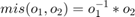
In the case of EBSD data, intergranular misorientations, misorientations between neighbouring grains, and misorientations between random measurments are of interest.
Let us first import some EBSD data by a script file
mtexdata forsterite
plotx2eastand reconstruct grains by
% perform grain segmentation [grains,ebsd.grainId,ebsd.mis2mean] = calcGrains(ebsd('indexed'),'threshold',5*degree);
The intergranular misorientation is automatically computed while reconstructing the grain structure. It is stored as the property mis2mean within the ebsd variable and can be accessed by
% get the misorientations to mean mori = ebsd('Fo').mis2mean % plot a histogram of the misorientation angles plotAngleDistribution(mori) xlabel('Misorientation angles in degree')
mori = misorientation size: 152345 x 1 crystal symmetry : Forsterite (mmm) crystal symmetry : Forsterite (mmm)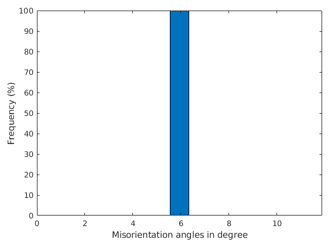
The visualization of the misorientation angle can be done by
close all plot(ebsd('Forsterite'),ebsd('Forsterite').mis2mean.angle./degree) mtexColorMap WhiteJet mtexColorbar hold on plot(grains.boundary,'edgecolor','k','linewidth',.5) hold off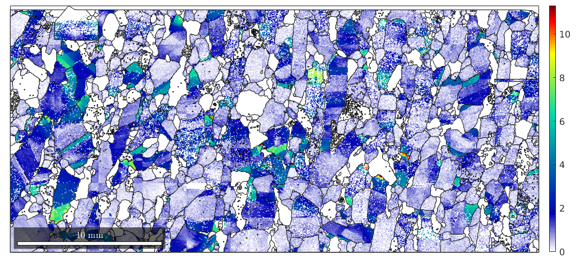
In order to visualize the misorientation by an ipdf colorcoding we first define an orientation to colormapping and set the colorStretching to increase the contrast around the white center. Note that the inversPoleFigureDirection of the ipdf map is automatically set to the white center to colorize grains with a small texture gradient with light colors.
oM = ipdfHSVOrientationMapping(mori) oM.colorStretching = 5; plot(oM)
Hint: You might want to use the point group
"222" for colorcoding!
oM =
ipdfHSVOrientationMapping with properties:
inversePoleFigureDirection: [1x1 Miller]
CS1: [4x2 crystalSymmetry]
CS2: [4x2 crystalSymmetry]
colorPostRotation: [1x1 rotation]
colorStretching: 1
whiteCenter: [1x1 vector3d]
sR: [1x1 sphericalRegion]
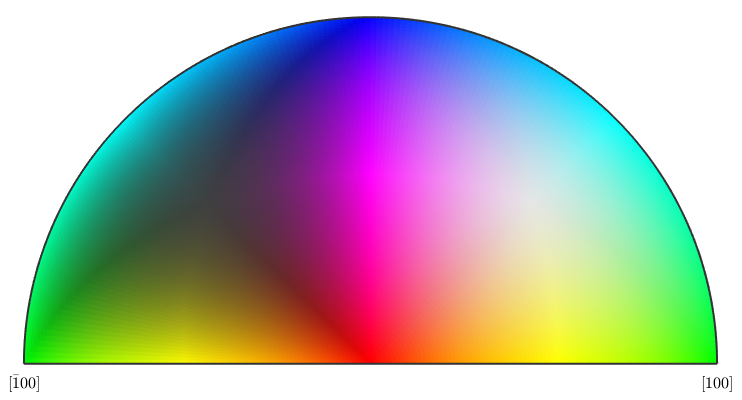 plot(ebsd('Forsterite'),oM.orientation2color(ebsd('Forsterite').mis2mean)) hold on plot(grains.boundary,'edgecolor','k','linewidth',.5) hold off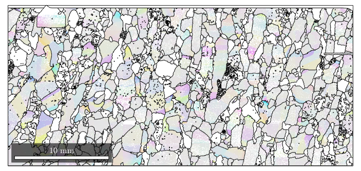
The misorientation between adjacent grains can be computed by the command grainBoundary.misorientation.html
plot(grains) hold on bnd_FoFo = grains.boundary('Fo','Fo') plot(bnd_FoFo,'linecolor','r') hold off bnd_FoFo.misorientation
bnd_FoFo = grainBoundary
Segments mineral 1 mineral 2
15974 Forsterite Forsterite
ans = misorientation
size: 15974 x 1
crystal symmetry : Forsterite (mmm)
crystal symmetry : Forsterite (mmm)
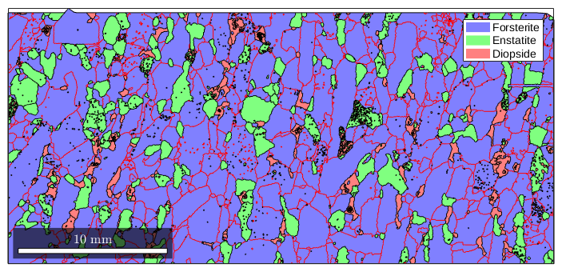 plot(ebsd,'facealpha',0.5) hold on plot(grains.boundary) plot(bnd_FoFo,bnd_FoFo.misorientation.angle./degree,'linewidth',2) mtexColorMap blue2red mtexColorbar hold off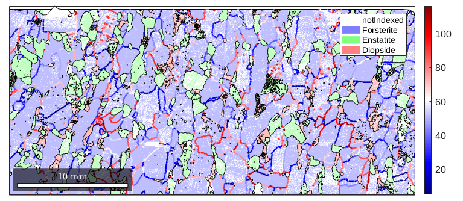
In order to visualize the the misorientation between any two adjacent grains there are two possibilities in MTEX.
The following command plot the angle distribution of all misorientations grouped according to phase trasistions.
close all
plotAngleDistribution(grains.boundary)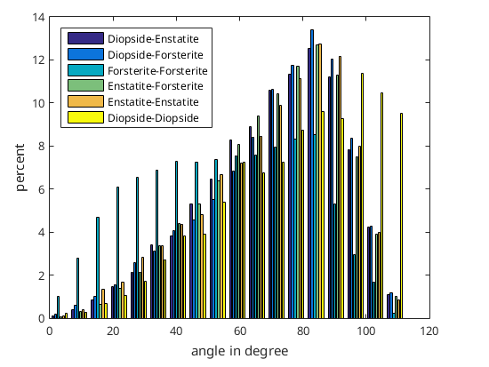 The above angle distributions can be compared with the uncorrelated angle distributions. The uncorrelated angle distributions can be obtained in two ways. First one can do the following
All these steps are performed by the single command
close all
plotAngleDistribution(ebsd)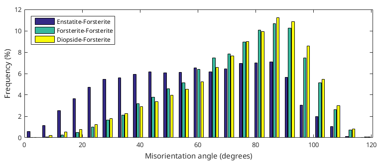 Another possibility is to compute an uncorrelated angle distribution from the EBSD data set by taking only into account those pairs of measurements that are sufficently far from each other (uncorrelated points). The uncorrelated angle distribution is plotted by
%plotAngleDistribution(ebsd,'ODF')In order to consider only a specific phase transistion one can use the syntax
close all plotAngleDistribution(ebsd('Fo'),ebsd('En'))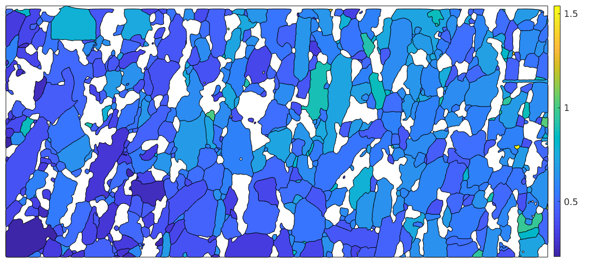
Let's start here with the uncorrelated axis distribution, which depends only on the underlying ODFs.
close all mtexFig = newMtexFigure; plotAxisDistribution(ebsd('Fo'),'smooth','parent',mtexFig.gca) mtexTitle('uncorrelated axis distribution') mtexFig.drawNow('figSize','normal')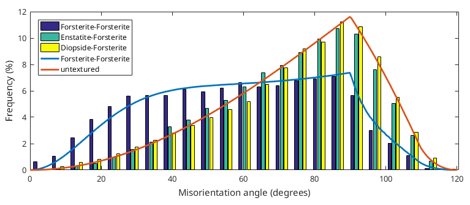
We may plot the axes of the boundary misorientations directly into this plot
mtexFig.nextAxis plotAxisDistribution(grains.boundary('Fo','Fo'),'smooth','parent',mtexFig.gca) mtexTitle('boundary axis distribution') mtexColorbar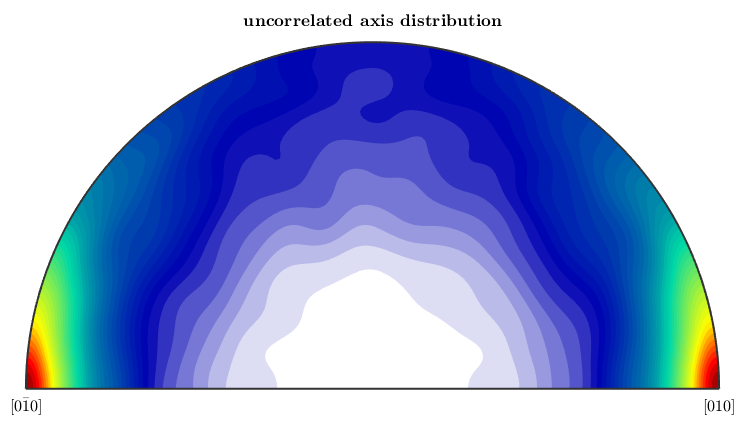
This shows a much stronger preference of the (1,1,1) axis in comparison to the uncorrelated distribution.
| DocHelp 0.1 beta |